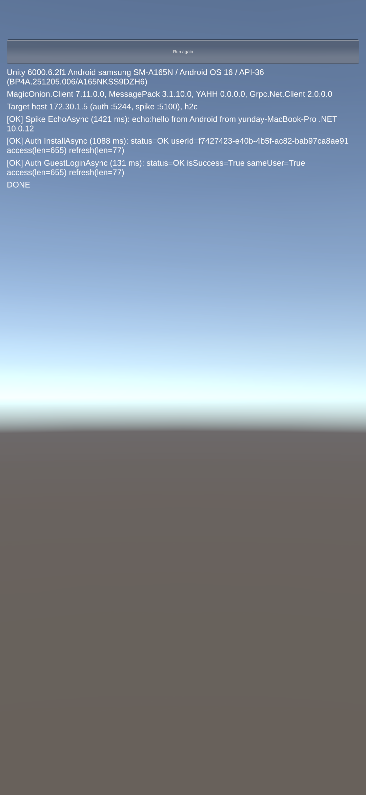
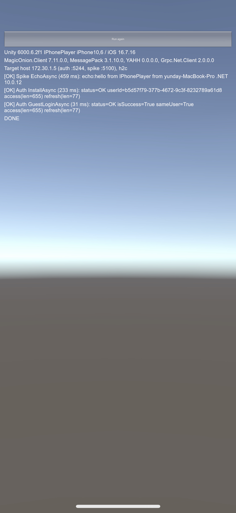

작업 목표
흰둥이의 서버는 인증을 맡는 AuthServer, 플레이어 데이터를 맡는 AccountServer, 원격 설정을 맡는 AppServer로 나뉘어 있었다. 이번 단계의 목표는 두 가지였다. 이 중에서 신작에 그대로 가져갈 것과 합칠 것, 버릴 것을 가르는 것. 그리고 새 버전의 Unity와 .NET으로 같은 흐름이 실제 기기에서 동작하는지 확인하는 것이었다.
작업 결과
흰둥이 서버를 분석한 문서 세 개와 결정 기록을 만들었고, 버리는 실험 코드로 새 기술 조합을 검증했다. Android와 iOS 실기기에서 .NET 10 서버 호출, 설치, 게스트 로그인이 모두 성공했다.


서버 쪽 4개와 클라이언트 쪽 5개의 검증을 모두 마쳤다.
Android 16과 iOS 16 기기에서 IL2CPP 빌드로 실행했다.
인증 · 계정 · 설정 서버 세 개를 인증 서버와 게임 서버 두 개로 정리하기로 했다.
분석과 검증 과정에서 내린 결정을 이유, 날짜와 함께 기록했다.
출시한 게임의 서버를 세 갈래로 나눠 봤다
흰둥이 최종 출시 버전의 저장소를 Claude Code에게 읽기 전용으로 맡겨 구조를 분석하게 했다. 서버마다 무엇을 하는지, 어디까지 게임에 묶여 있는지, 무엇을 그대로 재사용할 수 있는지를 문서로 정리했다.
AuthServer
게임 로직이 전혀 없는 인증 서버다. 설치, 게스트 로그인, 소셜 로그인, 토큰 갱신이 잘 동작하고 있어 코드를 이식해 공통 인증 서버로 쓰기로 했다.
AccountServer
프로필, 재화, 결제 같은 공통 기능과 퍼즐 전용 로직이 한 서비스에 섞여 있었다. 공통 부분만 골라 게임 서버로 옮기고, 퍼즐 로직은 가져가지 않는다.
AppServer
원격 설정(Remote Config)의 저장과 조회를 맡고 있었다. 원격 설정 기능만 게임 서버로 옮기고, 서버 사이의 내부 호출은 없앤다.
모든 구성요소를 다섯 가지로 분류했다
서버 코드, 공유 계약, 데이터베이스 테이블, Unity 네트워크 계층까지 하나씩 분류해 재사용 매트릭스로 정리했다.
KEEP_AUTH_PLATFORM: 인증 플랫폼으로 유지MOVE_TO_GAMESERVER: 게임 서버로 이동EXTRACT_SHARED: 클라이언트와 서버가 함께 쓰는 공통 패키지로 추출REFERENCE_ONLY: 코드는 가져가지 않고 설계만 참고DROP: 가져가지 않음
인증 서버는 게임마다, 게임 서버는 하나로
분석을 바탕으로 목표 구조를 정했다. 인증 서버는 같은 코드로 게임마다 따로 띄우고, 계정과 원격 설정은 게임별 게임 서버 하나로 합친다. 게임마다 Firebase 프로젝트와 인증 데이터베이스를 분리하므로 게임 사이에 계정은 공유하지 않는다.
Unity 클라이언트
공통 네트워크 · 인증 · 원격 설정 계층 위에 게임 코드를 올린다.
AuthServer
같은 코드로 게임마다 인스턴스를 띄운다. Firebase 프로젝트, 서명 키, 인증 DB도 게임별로 나눈다.
GameServer
플레이어, 재화, 결제, 원격 설정 모듈에 게임 전용 모듈을 더한다.
MariaDB
환경별 서버 하나를 여러 게임이 함께 쓰고, 스키마와 계정은 게임별로 나눈다.
모노레포 하나에 플랫폼과 게임을
새 저장소에 공통 패키지, 인증 서버, 게임 서버 라이브러리, 샘플, 게임을 함께 둔다. 게임은 공통 패키지를 로컬 경로로 참조하고, 플랫폼 코드가 게임 코드를 참조하지 못하도록 빌드 단계에서 막는다.
처음부터 지킬 원칙
- 사용자는 로그인 토큰으로만 식별한다.
- 게임 수치는 코드가 아니라 원격 설정 키로 관리한다.
- 두 번째 게임이 생길 때만 공통화한다.
- 비밀 값은 저장소에 두지 않고, 로그에 토큰이나 개인정보를 남기지 않는다.
코드를 쓰기 전에 실기기에서 먼저 확인했다
플랫폼 코드는 새 저장소에서 처음부터 쓰기로 했기 때문에, 그 전에 버리는 실험 코드로 기술 조합부터 확인했다. 결과만 문서로 남기고 실험 코드는 지우는 방식이다. 서버 쪽 검증을 먼저 끝낸 뒤 클라이언트와 실기기로 넘어갔다.
.NET 10 위의 MagicOnion 서버
ServerMagicOnion 7.11로 만든 최소 서버를 .NET 10에서 띄우고, 콘솔 클라이언트에서 호출해 동작을 확인했다.
EF Core 10과 MariaDB 11.8
DatabasePomelo의 EF Core 10 버전이 아직 없어 Microting 포크를 썼다. 마이그레이션, 마이크로초 단위 시간, 이모지, 행 잠금(FOR UPDATE), 중복 키 감지까지 기존 코드가 기대하는 동작을 모두 확인했다.
인증 서버 로컬 실행
Auth흰둥이의 인증 서버를 Docker 컨테이너로 로컬에서 띄웠다. 빈 데이터베이스에 기존 마이그레이션을 적용하고, 설치 → 로그인 → 토큰 갱신 흐름을 실제로 실행해 점검했다.
Unity 6.6 샘플과 패키지
Client에디터 스크립트로 번들 ID, IL2CPP, 코드 제거 수준, 자동 서명을 설정하고, MagicOnion 클라이언트, YetAnotherHttpHandler, MessagePack의 최신 버전을 설치했다.
실기기에서 세 가지 호출
DeviceGalaxy A16과 iPhone X에서 .NET 10 서버 호출, 설치, 게스트 로그인이 모두 성공했다. Android는 명령줄로 설치했고, iOS 16 기기는 Xcode에서 실행했다.
검증하면서 알게 된 것
모두 통과했지만 그냥 통과한 것은 아니었다. 다음 단계 설계에 바로 반영할 내용이 여럿 나왔다.
Unity 배치 모드는 패키지를 한 번에 복원하지 못했다
새 프로젝트에서는 MagicOnion 패키지가 필요로 하는 NuGet DLL이 없어 컴파일 오류로 먼저 멈췄다. Unity를 실행하기 전에 명령줄 도구로 NuGet 패키지를 복원하는 단계를 빌드 스크립트에 넣기로 했다.
iOS 16 기기는 명령줄로 설치할 수 없었다
Xcode 26의 설치 도구는 iOS 17 이상 기기를 대상으로 한다. iPhone X는 Xcode 화면에서 실행했고, 설치 자동화에는 iOS 17 이상 기기를 쓰기로 했다.
같은 Wi-Fi의 개발 서버 접속에는 iOS 권한이 필요했다
로컬 네트워크 권한 팝업이 떠 있는 동안 첫 요청은 실패했고, 허용한 뒤 다시 시도하자 성공했다. 운영 서버에는 해당하지 않으므로 개발 빌드에서만 한 번 재시도하도록 했다.
평문 HTTP/2는 예외 설정 없이 동작했다
YetAnotherHttpHandler는 자체 네트워크 스택을 써서 Android의 평문 차단이나 iOS의 App Transport Security가 적용되지 않았다. 코드 제거 수준을 High로 올려도 link.xml 없이 동작했다.
MariaDB 11.8의 정렬 규칙은 명시해야 했다
마이그레이션 과정에서 테이블마다 정렬 규칙이 섞였고, 이전 정렬 규칙은 서로 다른 이모지를 같은 문자로 취급했다. 기본 정렬 규칙을 명시하고, ID처럼 정확히 일치해야 하는 컬럼은 바이너리 정렬을 쓰기로 했다.
기기 인식 문제는 연결부터 의심했다
Android는 USB 허브를 거치자 충전조차 되지 않았고, Mac 포트에 직접 연결하자 바로 인식됐다. iPhone은 케이블을 한 번 다시 꽂자 Xcode에 나타났다.
결정은 사람이, 실행은 AI 에이전트가
이번 작업은 설계 대화와 실행을 나눠서 진행했다. 방향과 결정은 대화로 정했고, 저장소 분석과 실험 코드, 빌드, 로그 확인은 Claude Code에게 맡겼다. Claude Code는 단계마다 계획을 먼저 보여주고 승인을 받은 뒤에만 파일을 바꿨다.
AI 에이전트가 맡은 일
- 저장소 분석과 분석 문서 작성
- 실험용 서버와 클라이언트 코드 작성
- Docker 구성과 데이터베이스 마이그레이션
- Unity 배치 빌드, Xcode 프로젝트 생성, Android 설치
- 서버 로그와 데이터베이스로 결과 교차 확인
- 결과 문서와 정리 목록 작성
사람이 직접 한 일
- 방향 설정과 53개의 결정
- 기기 연결과 신뢰, USB 디버깅 허용
- iOS 16 기기를 Xcode에서 실행
- 로컬 네트워크 권한 허용
- Firebase 콘솔 설정
- 계획 승인과 보고서 검토
코드를 쓰기 전에 확신부터 만들었다
이번 단계에서는 플랫폼 코드를 한 줄도 쓰지 않았다. 대신 무엇을 가져갈지, 어떤 구조로 만들지, 어떤 기술 조합이 실제로 동작하는지를 먼저 확정했다.
이번 단계의 진행 순서
출시한 게임의 구조 분석
↓
가져갈 것 · 합칠 것 · 버릴 것 분류
↓
목표 구조와 원칙 결정
↓
버리는 실험 코드로 기술 조합 검증
↓
Android · iOS 실기기에서 확인
↓
결정 기록으로 정리새 플랫폼을 만들 때 가장 비싼 실수는 코드를 다 쓴 뒤에야 기술 조합이 기기에서 동작하지 않는다는 것을 알게 되는 것이다. 이번 단계는 그 위험을 먼저 없애는 데 집중했다.
실험 코드는 모두 버렸다. 남긴 것은 분석 문서, 검증 결과, 그리고 53개의 결정이다.
3줄 요약
- 출시한 게임 「흰둥이는 퐁퐁퐁」의 서버를 분석해, 인증 서버는 이식하고 계정 · 원격 설정 서버는 게임 서버 하나로 합치는 플랫폼 구조를 정했다.
- 플랫폼 코드를 쓰기 전에 Unity 6.6, MagicOnion 7.11, .NET 10, EF Core 10, MariaDB 11.8 조합을 Android와 iOS 실기기에서 검증했고 9개 항목을 모두 마쳤다.
- 분석과 실험은 AI 에이전트에게 맡기고 결정과 실기기 확인은 사람이 했다. 규칙 파일로 “하지 말 것”을 먼저 정해 둔 것이 안정적인 협업의 핵심이었다.
다음 작업
새 저장소와 인증 서버 이식
Phase 2yesitworks-platform 모노레포의 골격을 만들고 패키지 버전을 한 곳에 고정한다. 인증 서버를 .NET 10으로 이식하면서 통합 테스트와 CI를 함께 구성한다.
첫 수직 슬라이스
Phase 3원격 설정 확인 → 자동 게스트 시작 → 게임 입장(프로필 자동 생성) → 지갑 조회까지 하나의 흐름을 실기기에서 연결한다.
출시 필수 기능과 결제
Phase 4–5계정 삭제, 소셜 로그인, 원격 설정 관리 도구, 영수증 검증과 중복 지급 방지를 차례로 붙인다.